MyBatis(02)-基本使用
回顾
MyBatis的配置文件有哪两种？
核心配置文件：配置数据库的信息,驱动的类全名,url,账号,密码,接口映射文件的路径
接口映射文件：方法对应的SQL语句和返回值类型
- 说说接口映射文件中各属性的作用
<?xml version="1.0" encoding="UTF-8" ?>
<!DOCTYPE mapper
PUBLIC "-//mybatis.org//DTD Mapper 3.0//EN"
"http://mybatis.org/dtd/mybatis-3-mapper.dtd">
<mapper namespace="com.itheima.dao.UserMapper">
<select id="findAllUsers" resultType="com.itheima.entity.User">
select * from User
</select>
</mapper>
namespace: 包名.接口名
id: 接口中的方法名
resultType: 返回值类型
主体内容: SQL语句- 说说核心置文件中各属性的作用
<?xml version="1.0" encoding="UTF-8"?>
<!DOCTYPE configuration
PUBLIC "-//mybatis.org//DTD Config 3.0//EN"
"http://mybatis.org/dtd/mybatis-3-config.dtd">
<configuration>
<environments default="mysql">
<environment id="mysql">
<transactionManager type="JDBC"/>
<dataSource type="POOLED">
<!--1.3配置连接池需要的参数-->
<property name="driver" value="com.mysql.jdbc.Driver"/>
<property name="url" value="jdbc:mysql://localhost:3306/day17"/>
<property name="username" value="root"/>
<property name="password" value="root"/>
</dataSource>
</environment>
</environments>
<mappers>
<mapper resource="com/itheima/dao/UserMapper.xml"/>
</mappers>
</configuration>
driver: MySQL驱动的类全名
url: 数据库的URL
username: 数据库的账号
password: 数据库的密码
mapper标签的resource: 接口映射文件的路径- 说说以下各个类的作用：
| 类名 | 作用 |
|---|---|
| SqlSessionFactoryBuilder | 建造者,创建工厂的 |
| SqlSessionFactory | 工厂类,用来创建SqlSession |
| SqlSession | 相当于一个连接,用于操作数据库的 |
学习目标
- 掌握sqlMapConfig.xml中常用标签
- 掌握mybatis框架在DAO层的开发
- 掌握mybatis框架的输入输出映射
- 掌握 MyBatis 动态 sql 常用标签
项目结构
- mybatis_day02_01_xml用户的增删改查操作
- mybatis_day02_02_dynamic_sql动态SQL
- mybatis_day02_03_old传统DAO实现类方式
MyBatis框架的学习，不要纠结，老想为什么，我们的目标使用MyBatis，等我们框架使用熟练后，看源码学习。
准备数据
数据库SQL语句
CREATE TABLE USER (
id INT PRIMARY KEY AUTO_INCREMENT,
username VARCHAR(20) NOT NULL,
birthday DATE,
sex CHAR(1) DEFAULT '男',
address VARCHAR(50)
);
INSERT INTO USER VALUES (NULL, '孙悟空','1980-10-24','男','花果山水帘洞');
INSERT INTO USER VALUES (NULL, '白骨精','1992-11-12','女','白虎岭白骨洞');
INSERT INTO USER VALUES (NULL, '猪八戒','1983-05-20','男','福临山云栈洞');
INSERT INTO USER VALUES (NULL, '蜘蛛精','1995-03-22','女','盤丝洞');查询新增记录的主键值
当数据库表中，主键字段值由数据库维护（比如MySQL中的自增长），那么在新增完一条记录以后，如何获取到数据库维护的主键值呢？
目标
通过子元素<selectKey>得到新增记录的主键值(常用)
通过属性useGeneratedKeys得到新增记录的主键值(了解)
需求效果
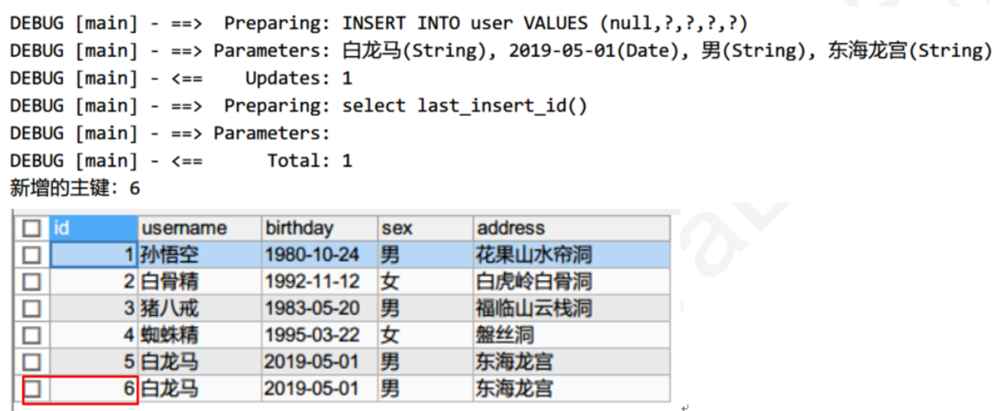
方式一：子元素<selectKey>（常用）
mysql中的函数：**last_insert_id() **：得到最后添加的主键
原理：在insert语句执行后再执行一条查询语句，返回新增主键的id
| 属性 | 说明 |
|---|---|
| keyColumn | 主键在表中的字段：user表中id列 |
| keyProperty | 实体类中主键的属性名 User中id |
| resultType | 主键类型，int类型 |
| order | BEFORE: 在insert之前执行 AFTER: 在insert之后执行 |
<!--
insert标签：表示添加记录
id: 方法名
如果参数是实体类，#{属性名}
-->
<insert id="addUser2" parameterType="com.itheima.entity.User">
<!--
keyColumn 主键在表中的字段：user表中id列
keyProperty 实体类中主键的属性名 User中id
resultType 主键类型，int类型
order
BEFORE: 在insert之前执行
AFTER: 在insert之后执行
-->
<selectKey keyColumn="id" keyProperty="id" resultType="int" order='after'>
SELECT LAST_INSERT_ID();
</selectKey>
INSERT INTO user VALUES (null, #{username}, #{birthday}, #{sex}, #{address})
</insert>测试代码
// 添加记录
@Test
public void testAddUser() {
// 在mybatis中默认是手动提交事务，增删改要提交事务
// Date.valueOf(字符串)，将字符串转成日期，格式一定要是yyyy-MM-dd
User user = new User(null,"白龙马", Date.valueOf("2019-05-01"),"男","东海龙宫");
int row = userMapper.addUser(user);
System.out.println("user = " + user);
}方式二：在insert标签中增加属性(了解)
| 属性 | 说明 |
|---|---|
| useGeneratedKeys | true，使用mysql生成的主键 |
| keyColumn | 表中主键对应的字段 |
| keyProperty | 实体类中对应的属性 |
映射文件
<!--
insert标签：表示添加记录
id: 方法名
如果参数是实体类，#{属性名}
-->
<insert id="addUser" parameterType="com.itheima.entity.User" keyColumn="id" keyProperty="id" useGeneratedKeys="true">
INSERT INTO user VALUES (null, #{username}, #{birthday},#{sex},#{address})
</insert>- 说明：直接在insert标签中增加属性的方式，只适合于支持自动增长主键类型的数据库，比如MySQL或SQL Server。
小结
插入数据后得到主键值有哪两种方式？
<!--这种方案所有数据库都支持,推荐使用--> <insert id="addUser" parameterType="com.itheima.entity.User"> INSERT INTO user VALUES (NULL, #{username}, #{birthday}, #{sex}, #{address}); <!-- keyColumn: 主键的字段名 keyProperty: 类中放主键的成员变量 resultType: 数据库主键的类型 order: 执行顺序 BEFORE: 先执行查询主键,后插入数据 AFTER: 先插入数据,后查询主键 --> <selectKey keyColumn="id" keyProperty="id" resultType="int" order="AFTER"> SELECT LAST_INSERT_ID(); </selectKey> </insert><!--useGeneratedKeys: 使用自增的主键--> <insert id="addUser2" parameterType="com.itheima.entity.User" useGeneratedKeys="true" keyColumn="id" keyProperty="id"> INSERT INTO user VALUES (NULL, #{username}, #{birthday}, #{sex}, #{address}); </insert>
核心配置文件：properties标签
目前我们将数据库相关的信息都是配置在核心配置文件中，如果核心配置文件中的内容很多，那么修改的时候就不是很方便。我们可以将数据库的配置信息专门放到一个单独的文件中，使用properties标签引入即可。
目标
学习properties标签的作用
sqlMapConfig.xml元素概述
sqlMapConfig.xml是mybatis框架的核心配置文件，目前我们在其中配置了运行环境（数据源）和加载映射文件。该配置文件中还有其它的一些配置。 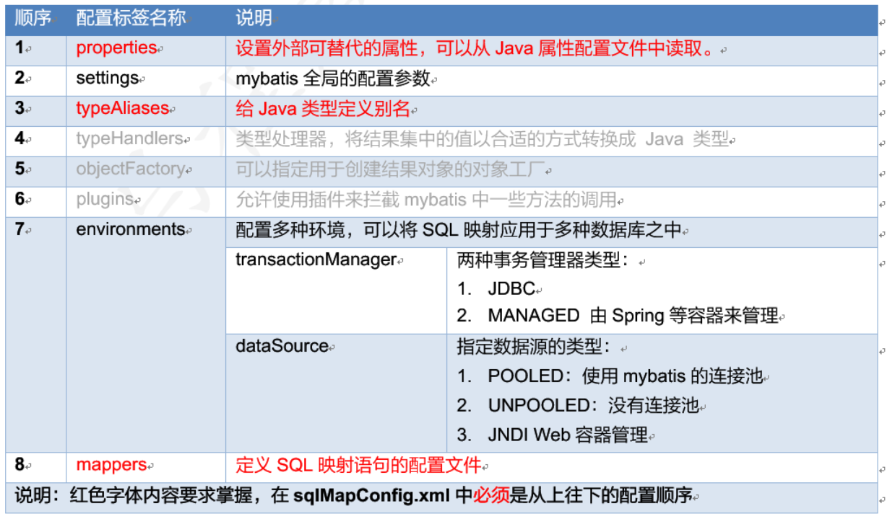
properties的作用
将外面的属性文件(.properties)加载进来。在后面就可以引用属性文件中的键和值
操作步骤
编写数据库连接属性资源文件（jdbc.properties）
jdbc.driver=com.mysql.jdbc.Driver
jdbc.url=jdbc:mysql://localhost:3306/mybatis
jdbc.username=root
jdbc.password=root在核心配置文件中通过properties标签加载jdbc.properties属性资源文件
<!--
属性：
resource: 指定类路径下Java的属性文件
-->
<properties resource="db.properties">
</properties>
<environments default="mysql">
<environment id="mysql">
<transactionManager type="JDBC"/>
<dataSource type="POOLED">
<!--1.3配置连接池需要的参数-->
<property name="driver" value="${jdbc.driver}"/>
<property name="url" value="${jdbc.url}"/>
<property name="username" value="${jdbc.username}"/>
<property name="password" value="${jdbc.password}"/>
</dataSource>
</environment>
</environments>小结
properties标签作用是什么？
引入外部的properties文件
如何使用外部properties文件中的数据
${键}: 通过键获取值
核心配置文件：typeAliases别名
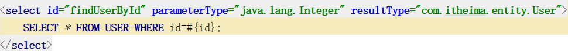
我们在接口映射文件中指定参数或返回值类型时，需要写出具体的包名和类名，是比较麻烦的。我们可以通过别名更简单，比如中华人民共和国，简称中国。
目标
学习typeAliases标签的使用
typeAliases作用
给自定义的实体类取别名，让类使用更简单
内置别名
| 别名 | 映射类型 |
|---|---|
| string | java.lang.String |
| byte | java.lang.Byte |
| long | java.lang.Long |
| short | java.lang.Short |
| int | java.lang.Integer |
| integer | java.lang.Integer |
| double | java.lang.Double |
| float | java.lang.Float |
| boolean | java.lang.Boolean |
| date | Date |
| decimal | BigDecimal |
| bigdecimal | BigDecimal |
| object | Object |
| map | Map |
| hashmap | HashMap |
| list | List |
| arraylist | ArrayList |
| collection | Collection |
| iterator | Iterator |
说明：
内置别名可以直接使用，Mybatis内置别名的规律：别名就是类名的小写
使用别名时不区分大小写: object, OBJECT, obJEct
自定义类取别名方式一：typeAlias
- 在配置文件中将用户指定别名为user
- 将结果类型设置为user
- 省略alias的情况
<typeAlias type="com.itheima.entity.User" alias="User"/>
<typeAlias type="com.itheima.entity.User"/>自定义类取别名方式二：包扫描配置别名package
如果有很多类，那么都需要取别名，一个一个取别名太麻烦了。可以使用包扫描方式。
<!--
定义别名
typeAlias 子元素
type: 类全名
alias: 别名，可以省略。默认使用类名做为别名，不区分大小写
package子元素：
给包里面所有类取别名, 别名就是类名，不区分大小写
-->
<typeAliases>
<typeAlias type="com.itheima.entity.User" alias="user"/>
<package name="com.itheima.entity"/>
</typeAliases>小结
typeAlias标签的作用：给类取别名
<!--typeAlias: 给一个自定义类取别名
type: 包名.类名
alias: 别名, 省略,默认就是拿类名小写作为别名
-->
<!--<typeAlias type="com.itheima.entity.User" alias="user"/>-->
<!--<typeAlias type="com.itheima.entity.User"/>-->package标签的作用: 扫描这个包中的所有类,去别名,别名就是小写类名
<!--package: 包扫描,会扫描这个包中的所有类,并且给这些类取别名,别名就是类名小写-->
<!--name: 包名-->
<package name="com.itheima.entity"/>核心配置文件：mappers（映射器）
目标
学习mappers标签的使用
作用
作用：加载接口映射文件
方式一：加载单个映射文件
mapper标签的属性
<!--映射器-->
<mappers>
<!--
resource: 指定类路径下映射文件，注：路径使用/做为分隔符，而不是点号
class: 指定使用注解的接口名字
-->
<mapper resource="mapper/UserMapper.xml"/>
</mappers>注：如果是多级目录，是/而不是点号
方式二：包扫描加载多个映射文件
包扫描方式加载mapper映射文件
要求接口映射文件，与接口要放在同一个目录
要求接口映射文件的名称，与接口的名称要一致
<!--配置接口映射文件-->
<mappers>
<!--
package标签:
接口映射文件与接口文件在同一个目录
接口映射文件的名称与接口文件的名称相同
-->
<package name="com.itheima.dao"/>
</mappers>小结
mappers元素作用？
指定接口映射文件的路径
<!--mappers标签:配置接口映射文件的位置-->
<mappers>
<!--package标签:包扫描, 扫描包中的所有接口映射文件,要求1.接口和接口映射文件要放在同一个包中,并且名称要一样
name: 包名-->
<package name="com.itheima.dao"/>
</mappers>MyBatis模糊查询
目标
使用接口代理方式模糊查询用户
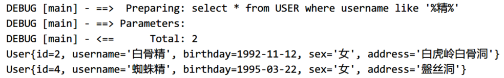
实现步骤
- 在接口中编写一个模糊查询的方法
- 在接口映射文件中编写相应的SQL语句
- 测试
方式一(掌握)
在接口中编写一个模糊查询的方法
/**
通过用户名模糊查询用户
*/
List<User> findUsersByName(String username);SQL语句
SELECT * FROM user WHERE username LIKE '%精%';在接口映射文件中编写相应的SQL语句
<select id="findUserByname" parameterType="string" resultType="user">
SELECT * FROM user WHERE username LIKE #{username};
</select>测试
查询名字中包含”精”字的用户
// 按名字模糊查询用户
@Test
public void testFindUsersByName() {
List<User> list = mapper.findUserByname("%精%");
for (User user : userList) {
System.out.println(user);
}
}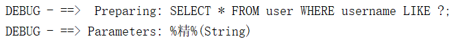
方式二(了解)
在接口映射文件中编写相应的SQL语句
<select id="findUserByname" parameterType="string" resultType="user">
SELECT * FROM user WHERE username LIKE '%${value}%';
</select>测试2
查询名字中包含”精”字的用户
// 按名字模糊查询用户
@Test
public void testFindUsersByName() {
List<User> list = mapper.findUserByname("精");
for (User user : userList) {
System.out.println(user);
}
}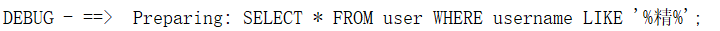
小结
#{} : 先使用?占位,后取出参数的值给?赋值,没有SQL注入
#{} 如果参数类型是基本数据类型和包装类和String, #{}里面可以随便写
#{} 如果参数是自定义的类,写 #{成员变量}
${} : 直接取出参数的值和SQL语句拼接,会有SQL注入
${} 如果参数类型是基本数据类型和包装类和String, ${} 里面必须写value
${} 如果参数是自定义的类,写 ${成员变量}
接口映射文件中方法的的参数类型可以省略
方法的返回值类型不能省略
接口映射文件：三种参数类型
目标
Java简单类型
POJO类型
POJO包装类型
简单类型
什么是简单类型：基本数据类型的8种+String，包括对应的包装类
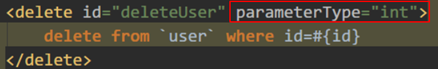
POJO类型
POJO（Plain Ordinary Java Object）简单的Java对象，实际就是普通JavaBean，即我们前面封装数据使用的实体类
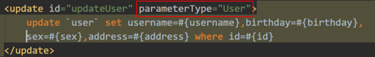
POJO包装类型
什么是POJO包装类型：就是在实体类中包含了其它的实体类
public class QueryVo {
private User user;
private String start;
private String end;
}案例： POJO包装类型的演示
目标
实现多条件查询，出生日期在start属性和end属性之间
方法定义多个参数方式实现实现多条件查询
SELECT * FROM user WHERE birthday BETWEEN 值1 AND 值2;接口
List<User> findUsersByBirthday(String start, String end);接口映射文件
<select id="findUsersByBirthday" parameterType="string" resultType="user">
SELECT * FROM user WHERE birthday BETWEEN #{arg0} AND #{arg1};
</select>测试
@Test
public void test10() throws IOException {
UserMapper mapper = sqlSession.getMapper(UserMapper.class);
List<User> list = mapper.findUsersByBirthday("1990-01-01", "2018-01-01");
for (User user : list) {
System.out.println("user = " + user);
}
sqlSession.close();
}存在的问题，SQL语句可读性太差
POJO包装类型实现多条件查询
编写POJO包装类型
VO: Value Object 值对象，实体类
package com.itheima.entity;
/**
包装类
*/
public class QueryVo {
private User user; // 包含用户对象
private String start; // 开始日期
private String end; // 结束日期
// 省略getter/setter
}声明mapper接口方法
/**
* 使用POJO包装类型，根据用户名称，开始和结束生日，模糊查询用户
*/
List<User> findUsersByCondition(QueryVo queryVo);配置mapper映射文件
<!--
queryVo：要定义别名
占位符，拼接符要使用实体类的属性名
-->
<select id="findUsersByCondition" parameterType="queryvo" resultType="user">
SELECT * FROM user WHERE id < #{user.id} AND birthday BETWEEN #{start} AND #{end};
</select>测试
@Test
public void testFindUsersByCondition() {
UserMapper mapper = sqlSession.getMapper(UserMapper.class);
QueryVo vo = new QueryVo();
User u = new User(10, "老宋", Date.valueOf("2000-02-02"), "男", "东莞");
vo.setUser(u);
vo.setStart("1990-01-01");
vo.setEnd("2018-01-01");
List<User> list = mapper.findUsersByCondition(vo);
for (User user : list) {
System.out.println("user = " + user);
}
// 手动提交事务
sqlSession.commit();
sqlSession.close();
}小结
三种参数输入类型分别是：
简单类型
基本数据类型+包装类+String, 总共17个POJO类型
实体类 public class User { private String sex; private String address; }POJO包装类型
public class QueryVo { private String start; // 开始日期 private String end; // 结束日期 private User user; // 包含其他类 }
接口映射文件：resultType输出类型
目标
学习输出结果resultType的两种类型
- 简单类型
- POJO类型
resultType的两种类型
java简单类型
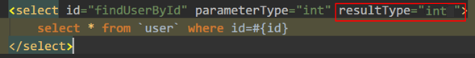
POJO类型
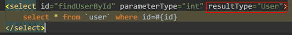
Java简单类型练习
统计用户表中女生的数量
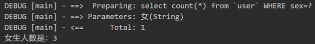
声明mapper接口方法
/**
* 统计用户表中某种性别的数量
*/
int getAmountBySex(String sex);配置mapper映射文件
<!-- 统计用户表中的女生的用户数量 -->
<select id="getAmountBySex" resultType="int" parameterType="string">
select count(*) from user where sex=#{sex}
</select>测试
// 查询有多少个女生
@Test
public void testGetAmountBySex() {
int amount = userMapper.getAmountBySex("女");
System.out.println("女生数量是：" + amount);
}小结
resultType的输出类型有哪两种？
Java简单类型
POJO
接口映射文件中的细节
1.参数类型可以省略
2.返回值类型必须写
接口映射文件：resultMap输出映射(重点)
MyBatis可以把查询的结果自动封装为对象。但是有要求：数据库中的列名称，要与对象的属性一致。否则不能正确封装数据。
当查询的列与对象属性不一致时候，使用resultMap解决。resultMap可以建立查询的列与对象属性的对应关系。
SELECT id id2, username username2, birthday birthday2, sex, address FROM user WHERE id = 2;查询一张表时，查询的字段名字和类的中的成员变量不一样，设置为null,一样的就有值
目标
使用resultMap对查询结果进行映射
配置mapper映射文件
- 定义resultMap标签
- id标签：映射主键字段，如果列名与属性名相同可以省略
- result标签：映射普通字段，指定哪个属性对应哪个列
- 在查询的结果中使用resultMap
<!--
定义结果映射
id: 映射的唯一标识
type: 最终结果转换后的类型
子元素：
id: 定义主键字段的映射
result: 定义普通的字段的映射
属性：property: 实体类中属性名，column: 表中列名，如果相同可以不写。
->
<resultMap id="u1" type="user">
<id column="id2" property="id"/>
<result column="username2" property="username"/>
<result column="birthday2" property="birthday"/>
</resultMap>
<select id="findUserByIdUseResultMap" parameterType="int" resultMap="u1">
SELECT id id2, username username2, birthday birthday2, sex, address FROM user WHERE id = #{id};
</select>测试，查询id为1的用户
@Test
public void test09() throws IOException {
UserMapper mapper = sqlSession.getMapper(UserMapper.class);
User user = mapper.findUserByIdUseResultMap(2);
System.out.println("user = " + user);
// 手动提交事务
sqlSession.close();
}映射流程
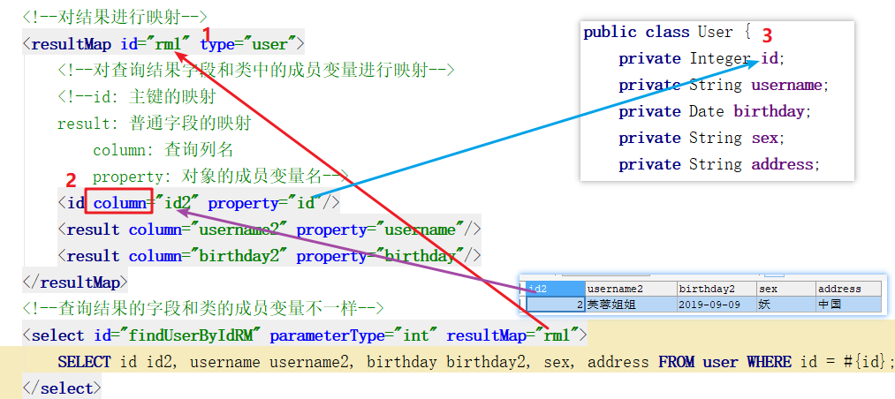
映射文件的标签小结
<!--resultMap标签:就是手动你对结果进行映射
id: 唯一标识, 通过id可以找到这个resultMap
type: 手动封装的结果的类型
id子标签: 表示对主键进行手动封装
column: 字段名
property: 类中的成员变量
result子标签: 表示对普通字段进行手动映射
注意:单表相同的字段会自动映射
-->
<resultMap id="rmUser" type="user">
<id column="id3" property="id"/>
<result column="username3" property="username"/>
<result column="birthday3" property="birthday"/>
</resultMap>
<!--根据ID查询一个用户,自己使用resultMap手动封装结果
如果查询结果的字段名和类中的成员变量名不相同,不会自动封装,
需要手动封装自己指定查询的结果字段,放到哪个成员变量中
需要通过resultMap来进行手动映射-->
<select id="findUserById2" parameterType="int" resultMap="rmUser">
SELECT id id3, username username3, birthday birthday3, sex, address FROM user WHERE id=#{id};
</select>动态SQL的概念和环境搭建
之前我们编写SQL语句的时候都是将SQL语句固定写好的
SELECT * FROM product WHERE brand='小米' AND type='ai' AND size=55;目标
学习动态SQL的概念
搭建动态SQL的环境
什么是动态SQL
动态SQL指的是：在程序运行时，根据不同的情况，拼接最终执行的sql语句。

搭建动态SQL的环境
模块名：mybatis_day02_02_dynamic_sql
动态SQL：if标签
目标
根据用户名和性别查询用户
学习动态SQL语句：if标签的使用
if标签的格式
<if test="条件">
SQL语句
</if>if标签的作用
做判断，如果满足条件就会拼接SQL
需求实现
定义QueryVo实体类
public class QueryVo {
private String username;
private String sex;
// 省略构造方法/getter/setter
}声明UserMapper接口方法
package com.itheima.dao;
import com.itheima.entity.User;
import java.util.List;
public interface UserMapper {
/*
根据用户名称和性别查询用户
*/
List<User> findUserByNameAndSex(QueryVo vo);
}配置mappr映射文件
<?xml version="1.0" encoding="UTF-8" ?>
<!DOCTYPE mapper
PUBLIC "-//mybatis.org//DTD Mapper 3.0//EN"
"http://mybatis.org/dtd/mybatis-3-mapper.dtd" >
<mapper namespace="com.itheima.dao.UserMapper">
<select id="findUserByNameAndSex" parameterType="queryvo" resultType="User">
SELECT * FROM user WHERE username LIKE #{username} AND sex=#{sex};
</select>
</mapper>UserMapper.xml
- if：判断用户名称不为空，且不为空字符串，则用户名称作为查询条件
- if：判断用户性别不为空，且不为空字符串，则用户性别作为查询条件
<?xml version="1.0" encoding="UTF-8" ?>
<!DOCTYPE mapper
PUBLIC "-//mybatis.org//DTD Mapper 3.0//EN"
"http://mybatis.org/dtd/mybatis-3-mapper.dtd" >
<mapper namespace="com.itheima.dao.UserMapper">
<!--直接根据用户名和性别查询-->
<!-- <select id="findUserByNameAndSex" parameterType="queryvo" resultType="User">
SELECT * FROM user WHERE username LIKE #{username} AND sex=#{sex};
</select>-->
<!--
判断用户名称不为空，且不为空字符串，则用户名称作为查询条件
判断用户性别不为空，且不为空字符串，则用户性别作为查询条件
-->
<select id="findUserByNameAndSex" parameterType="queryvo" resultType="User">
select * from user where
<if test="username!=null and username!=''">
username like #{username}
</if>
<!-- &&表示与操作，要转义 -->
<if test="sex!=null && sex!=''">
and sex = #{sex}
</if>
</select>
</mapper>测试
- 通过用户名和性别查询多个用户
- 只设置性别
- 名字和性别一个都不设置
@Test
public void testFindUserBySex() {
List<User> list = userMapper.findUserByNameAndSex(new QueryVo("", ""));
for (User user : list) {
System.out.println("user = " + user);
}
}疑问：if标签如果第1个条件没有，会出现什么情况？如何解决这个问题？
因为SQL语句拼接语句不正确，出现问题。
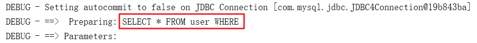
小结
if标签的格式：
<if test="条件">
SQL片段
</if>if标签作用
当条件为true,就拼接if里面的SQL片段动态SQL：where标签的作用
目标
学习where标签的使用
where标签作用
- 相当于where关键字，自动补全where这个关键字
- 去掉多余的and和or关键字
需求实现
UserMapper.xml
if标签写在where标签内部
- if：判断用户名称不为空，且不为空字符串，则用户名称作为查询条件
- if：判断用户性别不为空，且不为空字符串，则用户性别作为查询条件
<select id="findUserByNameAndSex" parameterType="queryvo" resultType="User">
SELECT * FROM user
<where>
<if test="username != null and username != ''">
username LIKE #{username}
</if>
<!--&&表示与操作，要转义-->
<if test="sex != null && sex != ''">
AND sex=#{sex};
</if>
</where>
</select>小结
where标签的作用
相当于WHERE关键字
去掉多余的AND或OR动态SQL：set标签
目标
set标签的使用
编写修改SQL语句存在的问题
之前我们编写修改的SQL语句时是根据用户ID更新用户所有字段的数据
<!--根据用户ID更新用户所有字段的数据, 这样存在问题，没有值的字段也会被更新为null,最好是有数据的字段更新，没有数据的字段不更新-->
<update id="updateUser" parameterType="user">
UPDATE user SET username=#{username}, birthday=#{birthday}, sex=#{sex}, address=#{address}
WHERE id=#{id};
</update>更新数据的时候，有些为空则不用更新，怎么来处理呢？
set标签的作用
- 用在update语句中，相当于set关键字
- 去掉SQL代码片段中后面多余的逗号
需求
根据id修改用户部分数据
实现
声明mapper接口方法
/**
更新用户
*/
int updateUser(User user);配置mapper映射文件：根据id修改用户部分数据
<!--这样存在问题，没有值的字段也会被更新为null，最好是有数据的字段更新，没有数据的字段不更新-->
<update id="updateUser" parameterType="user">
UPDATE user SET username=#{username}, birthday=#{birthday}, sex=#{sex}, address=#{address} WHERE id=#{id};
</update>测试
@Test
public void testUpdateUser() throws IOException {
User u = new User();
u.setId(26);
u.setUsername("大王");
userMapper.updateUser(u);
}这样存在问题，没有值的字段也会被更新为null，最好是有数据的字段更新，没有数据的字段不更新。
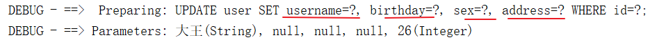
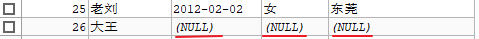
使用set标签进行判断，如果有值就更新，没有值就不更新。
<update id="updateUser" parameterType="user">
UPDATE user
<set>
<if test="username != null and username != ''">
username=#{username},
</if>
<if test="birthday != null">
birthday=#{birthday},
</if>
<if test="sex != null and sex != ''">
sex=#{sex},
</if>
<if test="address != null and address != ''">
address=#{address}
</if>
</set>
WHERE id=#{id};
</update>set标签，可以按照条件拼接set后面的内容
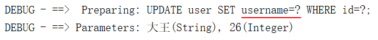
小结
set标签的作用是？
相当于SET关键字
还能去掉多余的逗号foreach标签：遍历数组1
MyBatis得到数组中的数据动态拼接SQL
int row = userMapper.deleteUsers(new int[]{1, 3, 6, 8});
delete from user where id in (1, 3, 6, 8);
使用数组来封装要删除的所有的id目标
foreach标签：遍历数组得到基本类型的数据
需求
遍历集合拼接SQL语句，实现批量删除用户
foreach标签介绍
| foreach标签的属性 | 作用 |
|---|---|
| collection | 要遍历的集合，2个取值：list或array |
| item | 设置变量名，代表每个遍历的元素 |
| separator | 每次遍历完后添加一个分隔符 |
| #{变量名} | 取出数据 |
实现
声明mapper接口方法
/**
批量删除用户
*/
int deleteUsers(int[] ids);配置mapper映射文件
<!--根据id删除多个用户
parameterType: 如果是数组写list-->
<delete id="deleteUserByIds" parameterType="list">
<!--DELETE FROM user WHERE id IN (1, 3, 5, 7, 8);-->
DELETE FROM user WHERE id IN
<!--目的,遍历参数拼接成: (1, 3, 5, 7, 8);
foreach: 遍历数组或集合
collection: 两个取值 遍历数组写array, 遍历集合写list
open: 遍历前添加的内容
close: 遍历后添加的内容
item: 保存遍历得到的元素
separator: 每次遍历后添加的内容
-->
<foreach collection="array" open="(" close=");" item="ele" separator=",">
#{ele}
</foreach>
</delete>测试
@Test
public void testDeleteUser() throws IOException {
int row = userMapper.deleteUsers(new int[]{24, 25, 26});
System.out.println("row = " + row);
}效果
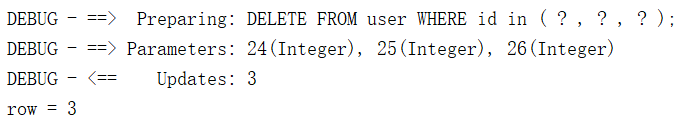
小结
foreach标签：可以遍历数组或集合
- collection：要遍历的数组或集合,数组写array,集合写list
- open：遍历元素前拼接的字符串
- close：最后一个元素后拼接的字符串
- item：保存每次遍历出来的元素
- separator：分隔符,每遍历一个元素后拼接的内容
<!--foreach标签的作用: 遍历数组或集合
collection: 遍历数组写array, 遍历集合写list
open: 遍历前添加的内容
close: 遍历后添加的内容
item: 每次遍历到的元素就会放到这个变量中
separator: 每次遍历到一个元素后拼接的内容
-->
<foreach collection="array" open="(" close=");" item="number" separator=",">
#{number}
</foreach>foreach标签：遍历集合2
目标
foreach标签：遍历集合得到自定义类型的数据
需求
使用list集合保存多个User对象，添加到数据库中
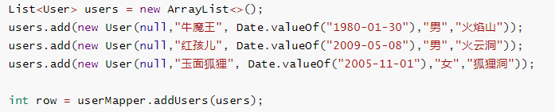
提问：一条insert语句插入多条记录的MySQL语句如何编写？
-- 同时插入多条记录
insert into user (username,birthday,sex,address) values
(#{username},#{birthday},#{sex},#{address}),
(#{username},#{birthday},#{sex},#{address}),
(#{username},#{birthday},#{sex},#{address});
/*
(#{username},#{birthday},#{sex},#{address}) 要循环的内容
*/实现
mapper接口批量添加用户的方法
/**
批量添加用户
*/
int addUsers(List<User> users);配置mapper映射文件
批量新增用户，参数类型是：list
<!--批量添加多条记录-->
<insert id="addUsers" parameterType="list">
insert into user (username,birthday,sex,address) values
<!--
collection 要遍历的集合使用list
item 设置变量名，代表每个遍历的元素
separator 每次遍历完后添加一个分隔符
#{变量名.属性} 来引用每个属性中的值
-->
<foreach collection="list" item="user" separator=",">
(#{user.username},#{user.birthday},#{user.sex},#{user.address})
</foreach>
</insert>测试
@Test
public void testAddUsers() throws IOException {
List<User> users = new ArrayList<>();
users.add(new User(null,"牛魔王", Date.valueOf("1980-01-30"),"男","火焰山"));
users.add(new User(null,"红孩儿", Date.valueOf("2009-05-08"),"男","火云洞"));
users.add(new User(null,"玉面狐狸", Date.valueOf("2005-11-01"),"女","狐狸洞"));
int row = userMapper.addUsers(users);
System.out.println("添加数据影响的行数 = " + row);
}结果
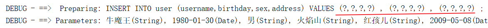
小结
foreach：可以遍历数组或集合
- collection：要遍历的数组或集合, 数组写array, 集合写list
- item：每次循环遍历到的数据保存到这个变量中
- separator：每次遍历完一个元素后拼接的内容
<!--
(NULL, '蛤蟆精','1995-03-22','女','盤丝洞'),
(NULL, '排骨精','1995-03-22','女','盤丝洞'),
(NULL, '洗洁精','1995-03-22','女','盤丝洞');
以上内容是我们要循环出来的-->
<foreach collection="list" close=";" separator="," item="user2">
(NULL, #{user2.username}, #{user2.birthday}, #{user2.sex}, #{user2.address})
</foreach>sql和include标签(了解)
我们发现在接口映射文件中会出现很多相同的SQL语句，每个地方都写一遍有些麻烦。我们可以把相同的SQL语句抽取出来，在需要的地方引入即可。
目标
学习sql和include标签的使用
sql和include标签的作用
- sql标签：定义一段SQL语句，起个名字可以重用。
- include标签：引入上面定义的SQL代码段。
需求实现
UserMapper.xml
<!--抽取重复的SQL并取个名字-->
<sql id="commont">
INSERT INTO user (username,birthday,sex,address) VALUES
</sql>
<insert id="addUsers" parameterType="list">
<!--INSERT INTO user (username,birthday,sex,address) VALUES-->
<!--引入上面的的SQL-->
<include refid="commont"/>
<foreach collection="list" close=";" separator="," item="user">
(#{user.username},#{user.birthday},#{user.sex},#{user.address})
</foreach>
</insert>小结
- sql标签的作用：可以抽取常用的SQL语句
<!--假设这个SQL语句很常用,放到sql标签中-->
<sql id="abc">
INSERT INTO USER VALUES
</sql>- include标签的作用：可以引入抽取的SQL语句
<include refid="abc"/>MyBatis开发方式三种:
- 接口代理模式
- 传统的DAO实现类的开发方式
- 注解开发方式
传统的DAO实现类的开发方式[了解]
目标
使用传统的DAO实现类开发方式
- 查询指定id的用户
复制新的模块
- 在 windows 下将 mybatis-day02-01-xml 复制成 mybatis-day02-03-old
- 在 windows 下将 mybatis-day02-01-xml.iml 的文件名改成 mybatis-day02-03-old.iml
- 导入mybatis_day02-03-old项目
编写UserMapper接口
public interface UserMapper {
/*
通过id查询到一个用户
*/
User findUserById(Integer id);
}编写UserMapper接口映射文件
<?xml version="1.0" encoding="UTF-8"?>
<!DOCTYPE mapper
PUBLIC "-//mybatis.org//DTD Mapper 3.0//EN"
"http://mybatis.org/dtd/mybatis-3-mapper.dtd">
<mapper namespace="com.itheima.dao.UserMapper">
<select id="findUserById" parameterType="int" resultType="uSer">
SELECT * FROM USER WHERE id=#{id};
</select>
</mapper>编写接口实现类UserMapperImpl
package com.itheima.dao;
import com.itheima.entity.User;
import org.apache.ibatis.io.Resources;
import org.apache.ibatis.session.SqlSession;
import org.apache.ibatis.session.SqlSessionFactory;
import org.apache.ibatis.session.SqlSessionFactoryBuilder;
import java.io.IOException;
public class UserMapperImpl implements UserMapper {
@Override
public User findUserById(Integer id) {
SqlSessionFactoryBuilder builder = new SqlSessionFactoryBuilder();
factory = builder.build(UserMapperImpl.class.getResourceAsStream("/sqlMapConfig"));
SqlSession session = factory.openSession();
User user = session.selectOne("com.itheima.dao.UserMapper.findUserById", id);
session.close();
return user;
}
}编写测试类
public class TestUserMapper {
@Test
public void test01() {
UserMapperImpl dao = new UserMapperImpl();
User user = dao.findUserById(7);
System.out.println("user = " + user);
}
}小结
传统的DAO实现类的开发方式和接口代理的方式区别？
传统的DAO实现类的开发方式: 要自己编写接口的实现类,还要自己找SQL语句
接口代理的方式: sqlSession.getMapper(接口.class); 自动生成接口的实现类对象.调用方法即可
学习总结
- 能够使用mybatis的条件查询
接口
User findUserById(int id);
接口映射文件
<!--#{id}: 1.使用?占位, 将参数赋值给?-->
<select id="findUserById" resultType="com.itheima.entity.User" parameterType="int">
SELECT * FROM user WHERE id=#{id};
</select>- 能够使用mybatis模糊查询
接口
List<User> findUserLikeName(String name);
接口映射文件
<select id="findUserLikeName" resultType="user" parameterType="string">
SELECT * FROM USER WHERE username LIKE #{name};
</select>
测试类
// 模糊查询1
List<User> users = mapper.findUserLikeName("%精%");- 能够使用动态sql完成sql拼接
if标签的格式:
<if test="条件">
SQL片段
</if>
if标签的作用: 当条件为true, 就会拼接SQL片段
<where></where>
where标签的作用:
1.相当于WHERE关键字
2.去掉多余的AND 或 OR
<set></set>
set标签的作用:
1.相当于SET关键字
2.去掉多余的逗号
<foreach></foreach>
foreach标签的作用: 遍历数组或集合
collection属性: 数组写array, 集合写list
open属性: 遍历前添加的内容
close属性: 遍历后添加的内容
item属性: 存放遍历到的数据
separator: 每次遍历后拼接的内容